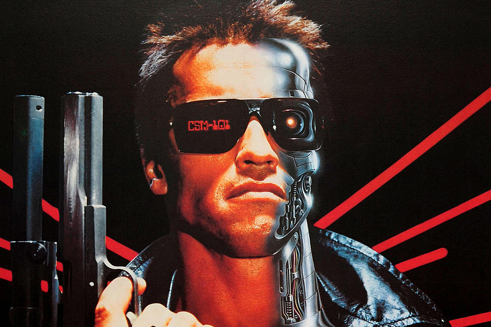

Arnold Alois Schwarzenegger (Thal, Austria; 30 de julio de 1947) es un actor, empresario, político y exfisicoculturista profesional de origen austríaco y nacionalizado estadounidense.
Schwarzenegger ganó fama mundial a partir de la década de 1980 como icono del cine de acción de Hollywood. En 1984 apareció como villano en la exitosa The Terminator (1984) de James Cameron,
papel que ha retomado en varias secuelas, especialmente en la aclamada Terminator 2: el juicio final (1991).

En el año 2029, después de devastar la Tierra y esclavizar a la humanidad, las máquinas, gobernadas por la inteligencia artificial conocida como Skynet, están a punto de perder la guerra
contra la resistencia humana liderada por John Connor. Frente a esa situación, las máquinas entienden que asesinar a John Connor en el presente sería irrelevante, dado que ya ha conducido
a la resistencia humana a la victoria. Para ello Skynet envía al año 1984 a un Terminator T-800 modelo Cyberdyne 101, un cíborg exterminador , a través de una máquina del tiempo,
con la misión de exterminar a Sarah Connor.
Linda Hamilton
Linda Carroll Hamilton (Salisbury, Maryland, 26 de septiembre de 1956) es una actriz estadounidense. Realizó el papel más notable como Sarah Connor en la película The Terminator.
Aunque de pequeña Linda Hamilton pensó en ser una famosa arqueóloga, con el tiempo se dio cuenta que la interpretación era lo que realmente le gustaría hacer. Su gran oportunidad
llegó con una película que suponían que no tendría mucho éxito y que no duraría mucho en las salas titulada The Terminator. La película fue un éxito de taquilla y su papel muy llamativo.
Linda Hamilton es Sarah Connor, una camarera joven que servía cafés y llevaba una vida normal, hasta que es perseguida por un asesino implacable,
el Terminator T-800 modelo 101 de Cyberdyne Systems por razones totalmente desconocidas para ella. El soldado que viaja desde el futuro,
Kyle Reese, le explica que en el futuro una inteligencia artificial llamada Skynet será creada por ingenieros
militares de software para tomar decisiones estratégicas de defensa.
Michael Biehn
Michael Connell Biehn (Anniston, Alabama, 31 de julio de 1956) es un actor estadounidense. Ha participado en varias películas incluyendo The Terminator (1984).
Tras una serie de films en los que ejercía de secundario, como Coach o The Fan, un por aquel entonces desconocido James Cameron le concedió el papel del héroe
Kyle Reese en su película The Terminator. La película, de poco presupuesto, consiguió (contra todo pronóstico) calar en el público, convirtiéndose inmediatamente en una obra de culto de ciencia ficción.
Michael Biehn es Kyle Reese. Kyle nació en 2002, es decir posteriormente al día del Juicio Final y la caída de la civilización humana, un niño criado entre las ruinas, a sabiendas de una vida con miedo
y la amenaza constante de exterminio. Se afilia a la resistencia a una edad temprana, luego de ser rescatado de los campos de concentración por John Connor donde era obligado a trabajar cargando cadáveres.
 Arnold Alois Schwarzenegger (Thal, Austria; 30 de julio de 1947) es un actor, empresario, político y exfisicoculturista profesional de origen austríaco y nacionalizado estadounidense.
Schwarzenegger ganó fama mundial a partir de la década de 1980 como icono del cine de acción de Hollywood. En 1984 apareció como villano en la exitosa The Terminator (1984) de James Cameron,
papel que ha retomado en varias secuelas, especialmente en la aclamada Terminator 2: el juicio final (1991).
Arnold Alois Schwarzenegger (Thal, Austria; 30 de julio de 1947) es un actor, empresario, político y exfisicoculturista profesional de origen austríaco y nacionalizado estadounidense.
Schwarzenegger ganó fama mundial a partir de la década de 1980 como icono del cine de acción de Hollywood. En 1984 apareció como villano en la exitosa The Terminator (1984) de James Cameron,
papel que ha retomado en varias secuelas, especialmente en la aclamada Terminator 2: el juicio final (1991).